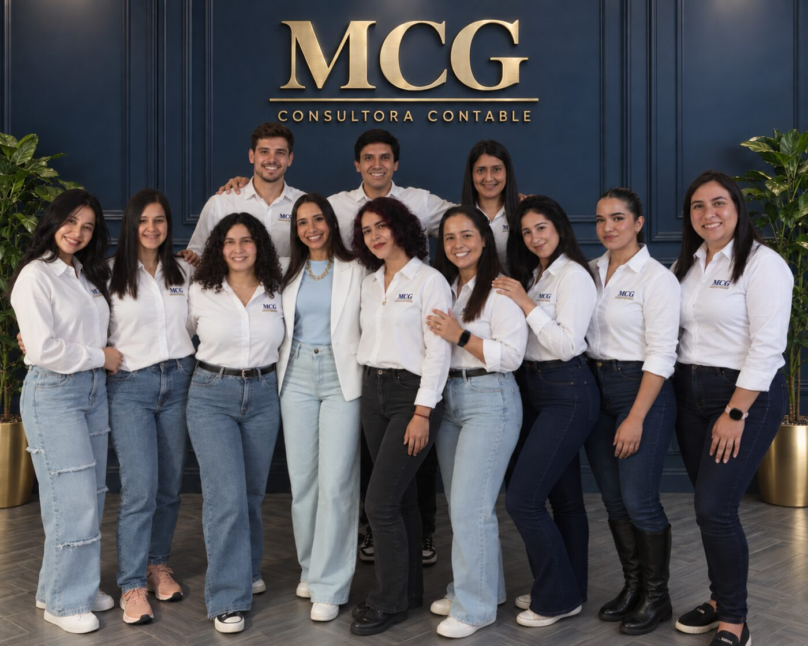

Cristina Rolón, Certified Public Accountant and director of MCG
Technical leadership that understands how companies actually decide: tax training, professional practice and experience on corporate boards in Paraguay.
Background
- ✓ Certified Public Accountant, graduated from the Universidad Nacional de Asunción (National University of Asunción), 2008
- ✓ Master's in Taxation, with additional specializations in tax matters
- ✓ 18 years of professional experience across a range of industries
- ✓ Specialist in implementing the accounting module of ERP systems, with more than 30 companies implemented
- ✓ Experience in organizations ranging from 10 to more than 700 employees
- ✓ Member of corporate boards
- ✓ Director of MCG Consultora Contable y Tributaria, in Asunción, Paraguay
That board-level experience gives Cristina a direct read on how companies evaluate information, prioritize risks and make decisions — something she carries into the judgment with which she leads MCG and into the kind of reports the firm delivers to its clients.
Where the discipline behind her work comes from
Cristina is a Certified Public Accountant, a 2008 graduate of the Universidad Nacional de Asunción (National University of Asunción). Before founding MCG she worked across several industries that shaped how she works: each one taught her to look at numbers in context, understanding the business behind every figure. She later completed additional specializations and a Master's in Taxation, always seeking to go deeper and to meet the challenges her clients bring.
That same demanding standard led her, for a stretch of her life, to compete in bodybuilding. Preparing to step on stage is not a one-day effort: it means training for years for a result measured in minutes, holding a routine when nobody is watching, and adjusting the method when something is not working. Cristina applies that same logic — consistency, method and constant review — to the accounting and tax strategy of every company she serves.
She defines herself by perseverance, the depth of her technical knowledge and a genuine desire to contribute to every company she works with. Her motto is simple: leave something built where you provide your services, and make a meaningful impact on the result.
A stable team as operational backing

Behind Cristina's leadership, MCG has a stable team that carries out the day-to-day accounting and tax work: records, reconciliations, filings before DNIT (Paraguay's tax authority), documentation follow-up and answering each company's questions.
That stability is part of the service. Having the same people follow your company month after month means you never have to explain the business from scratch again, and that accounting criteria stay consistent over time.
See how we can help your company
Tell us about your situation and we will assess the scope of the work together.
Talk to us